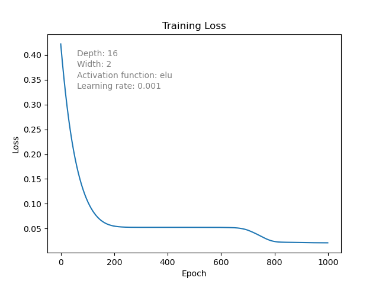
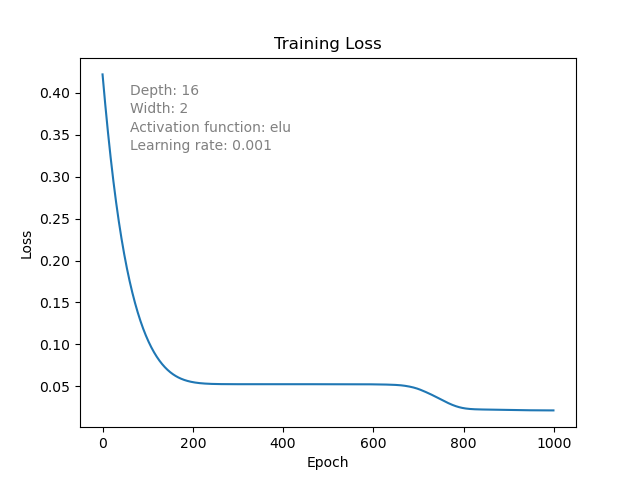
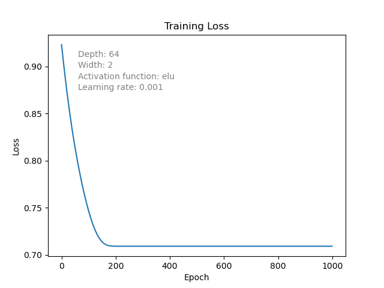

An Exploration of Neural Network Expressivity and Approximation Dynamics
Depth
N = 4
Approximation Progression
Loss Progression


N = 16
Approximation Progression
Loss Progression
 

N = 64
Approximation Progression
Loss Progression
